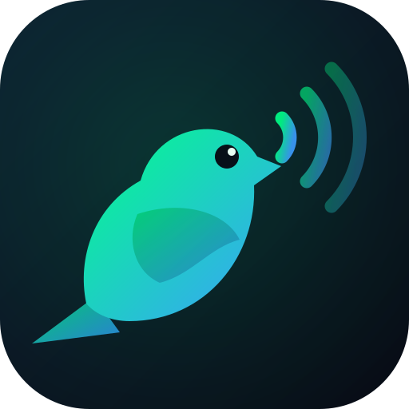

Chirping
Spectral Matching · Free · v3.1
Locating…
Drag to orbit
Pinch to zoom
🎙️
Tap to record a bird sound
00:00
Hi-pass 300 Hz
Lo-pass 12 kHz
Compressor
Peak:
—
Centroid:
—
Peaks:
—
Duration:
—
Identifying bird species…
Analysing audio…
Top 3 Matches
✕